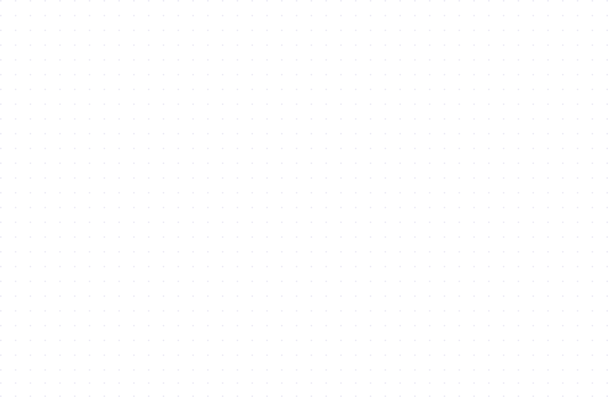
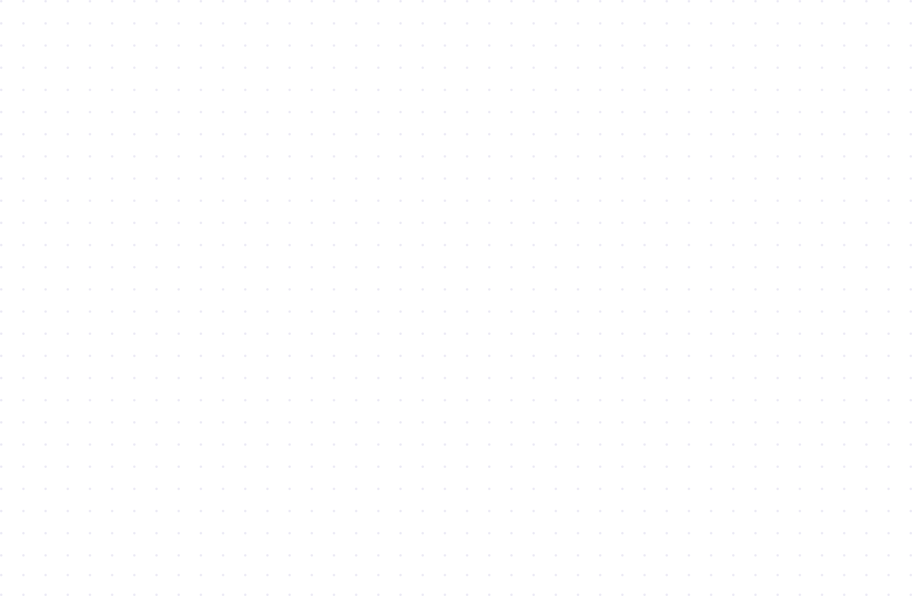

What is ReflectCE
How It Works
FAQ
Self-directed reflective continuing education, designed to
find busy learners where learning happens
Powered by human-centric AI and a growing array of 5000+
connectors to real-life (and work) learning contexts

What is ReflectCE
ReflectCE is an accredited activity that brings learners
right-place, right-time and self-directed reflective learning.
Powered by human-centric AI and a growing array of 5000+
connectors to real-life (and work) learning contexts, ReflectCE
helps busy learners ubiquitously capture self-evaluations that
described their understanding of an idea, assess its clinical
relevance or professional impact to performance and draw meaning
into clinical outcomes within their practice. In return,
reflections result in continuing education credit.
250k+
Reflections captured to date, with 2k+ new reflections being
captured each week
5+
On average, each learner reflection signals 5+
clinically-relevant connections
12+
Average ReflectCE learner reflects 12+ times across 4+
different learning contexts
How does it work
Discover
ReflectCE is designed on the principles of learner
autonomy, contextual discovery and supercharged
meaning-making...
AI-powered
When discovered, learners trigger the activity with a
self-initiated AI-powered search that takes into account
factors such as the clinically-relev...
100% opt-in
100% opt-in and of their choice, learners launch into a
separate digital space to engage and reflect on the
presented accredited ReflectCE ...
Continuing education
Reflections in ReflectCE offers continuing education
credit for Dentists, Nurses, Nurse Practitioners,
Pharmacists, Physician Assistants...
Frequently asked questions
I have claimed ReflectCE credits, now how do I generate my
certificate?

When you reflect, you’ll receive a link to your Learner Hub, where you can:
- See the total credits you’ve earned
- A timeline of all your contextualized reflections (and some exciting superpowers coming to help you analyze, share, boost & plan your learning impact for work + life)
- Generate certificates & transcripts based on your reflections
How can I / my organization incorporate ReflectCE in my learning
experience(s)?
How do I get started? Want to collaborate with us? Questions?
 


ReflectCE is a copyrighted activity & learning technology
developed by
SCAD Group Inc.
©2023 SCAD Group Inc. All right reserved.
For questions, please contact
info@reflectce.com
For Activity Details, please
visit this link